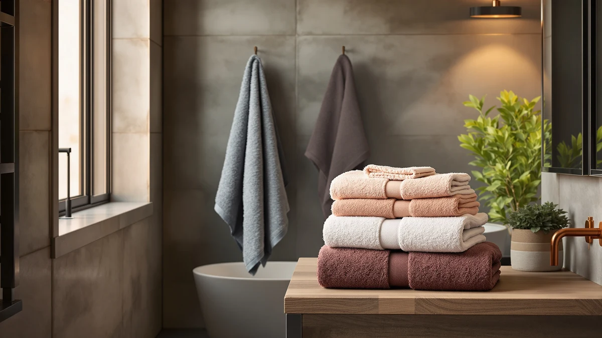

The Best Odor-Resistant Bath Towels of 2026: Stay Fresh Longer
Prices and picks verified as of August 2026. Independent, reader-supported reviews.


Quick Answer
After comparing material, weight, and price across eight candidates, the NALIVO Extra Large Bath Towel set is our pick for the best odor resistant bath towels. Its microfiber blend wrings out and dries fast enough to limit the damp window where bacteria cause musty smells, and the six-piece set keeps the cost per towel low. If you prefer natural fiber, the Lacoste Heritage Anti-Microbial Supima Cotton adds a treatment built specifically to fight odor-causing bacteria.
Our pick: NALIVO Extra Large Bath Towel, $47.58 Check Price on Amazon
Bottom line: our top pick is the NALIVO Extra Large Bath Towel Set of 6 at $55.98. The best budget option is the Utopia Towels 4 Pack Premium Bath Towels Set at $29.44.
Things to Know Before You Buy
- Drying speed matters more than thickness. A towel that stays damp on the hook gives bacteria more time to multiply, so fast-drying microfiber often resists odor better than a plush, slow-drying weave.
- Anti-microbial treatments target the smell directly. The Lacoste Heritage in this lineup adds a finish designed to fight odor-causing bacteria on the fiber itself instead of relying only on moisture-wicking.
- Fabric softener works against microfiber. It coats synthetic fibers and traps body oil, which is the residue that turns into a stale smell over time.
- Set size changes your cost per towel. Multi-packs like the NALIVO 6-piece set or the Utopia 4-pack bring the per-towel price well below single towels of similar material.
- Price here runs $29.44 to $47.58 across eight towels, so odor resistance does not require the most expensive option on the list.
The best odor resistant bath towels solve a problem that has little to do with color or softness: the musty smell that creeps into a towel left damp between showers. That smell comes from bacteria and mildew feeding on trapped moisture and skin oil, and no towel is immune to it if it never fully dries. A good pick separates itself from a bad one by how fast the fabric sheds water and whether it fights bacteria at the fiber level.
We researched eight bath towels across cotton, microfiber, and one anti-microbial-treated option, comparing verified owner reviews, listed materials, and pricing to find sets that hold up against odor in everyday use. Prices range from $29.44 to $47.58, and our overall pick, the NALIVO Extra Large Bath Towel, pairs fast-drying microfiber with a six-piece set that keeps replacement cheap if a towel starts to smell before its time.
Below, we walk through every pick, who each one suits, and where each one falls short, followed by a side-by-side comparison table and answers to the questions we hear most about keeping towels smelling clean.
Why You Should Trust Us
We are Ilane Tall, home and bath researchers who cover towels, rugs, and other bathroom textiles for Best Bath Towels. To build this list of the best odor resistant bath towels, we compared manufacturer specs, verified buyer reviews, and pricing across eight products, focusing on the material and construction details that actually influence how fast a towel dries and whether it resists bacteria.
No brand paid for placement here, and every product link is an affiliate link, which you can read about in our disclosure. Our goal is to point you toward the towel we would buy with our own money, and to flag the ones we would think twice about.
How We Picked
We started by narrowing the field to towels with a real angle on odor resistance: fast-drying microfiber, a dedicated anti-microbial treatment, or dense natural cotton with strong reviews for freshness. To make this list of the best odor resistant bath towels, each product needed a clearly listed material and size, a price under $50, and enough verified owner feedback to judge real-world performance rather than marketing copy.
We passed on towels with vague or missing material descriptions and on sets priced well above the market for what they offered. We also made sure the lineup covered a spread of budgets and set sizes, from a $29.44 four-pack to a $47.58 six-piece set, so there is an option whether you are outfitting one bathroom or several.
How We Compared
We lined up the eight towels side by side on the specs that matter most for staying fresh: fiber type, GSM or weave density where listed, set size, and price per towel. Microfiber options like the POLYTE 430 GSM towels and the NALIVO set were compared on how quickly synthetic fiber typically wrings out and dries relative to cotton loops, since drying speed is the biggest lever against musty smell.
For the cotton towels, including the Cotton Paradise Turkish set and the Lacoste Heritage, we weighed fiber quality and any added treatment against verified owner reviews mentioning freshness, softness after washing, and durability. We then ranked every pick by how well its material and price balanced odor resistance against comfort, since a towel that resists smell but feels rough is not a towel most people will keep using.
Our Picks

NALIVO Extra Large Bath Towel
What we like
- Six-piece set covers a full bathroom without buying multiple packs
- Microfiber wrings out and dries fast, limiting the damp time that lets odor-causing bacteria build up
- Extra-large sizing gives more coverage per towel than standard cotton bath towels
- Lowest cost-per-towel of any set in this lineup at $47.58 for six pieces
Flaws but not dealbreakers
- Microfiber can trap body-oil residue if washed with fabric softener, which coats the fibers
- Synthetic feel is less plush against skin than a cotton terry towel
| Material | Microfiber |
| Size | 6Piece Towel Set |
The NALIVO Extra Large Bath Towel set is our top pick among the best odor resistant bath towels because it attacks the root cause of musty smell directly: how long fabric stays wet. Microfiber's fine synthetic strands wring out far more water than cotton loops, so towels from this set leave the shower already closer to dry, cutting the window bacteria need to multiply on damp fabric. At $47.58 for six pieces, the set also works out to roughly $7.93 per towel, cheap enough to rotate a fresh one in without hesitation.
Microfiber has one habit worth knowing about before you buy: fabric softener and dryer sheets coat synthetic fibers with a film that traps body oil instead of releasing it in the wash, which is exactly the residue that turns into odor over time. Skipping softener and using a normal detergent avoids that problem entirely. Owners shopping for a full set of the best odor resistant bath towels who want fast turnover and low replacement cost will get the most out of this pick.

Cotton Paradise 100% Cotton Turkish
What we like
- 100% Turkish cotton offers a denser, more absorbent weave than basic cotton
- Six-piece set covers a full bathroom for $39.99
- Reviewers consistently note the towels stay soft after repeated washing
Flaws but not dealbreakers
- Dense cotton holds more water and takes longer to air-dry than microfiber
- Needs a hook with good airflow to avoid staying damp in a humid bathroom
| Material | 100% cotton |
| Size | 6 Piece Towel Set |
The Cotton Paradise Turkish set is the natural-fiber pick in this group of the best odor resistant bath towels. Turkish cotton uses a tighter, denser weave than standard terry, which gives it more surface area to absorb water and reviewers describe as a plush, hotel-like feel that holds up over time. At $39.99 for six towels, it undercuts most single Turkish cotton towels sold individually while covering an entire household.
Cotton's tradeoff against odor is drying speed. Because the fibers hold more water than microfiber, these towels need a spread-out hook or bar with airflow to dry fully between uses, rather than being bunched on a ring. Skip that step in a small, humid bathroom and any cotton towel, including this one, is more likely to develop a musty smell. Buyers who prefer the feel of natural cotton and are willing to manage drying conditions will find this a solid, budget-friendly choice.

White Classic Luxury Bath Towels
What we like
- 100% cotton in a standard 27 by 54 inch size fits most towel bars and hooks
- Reviewers describe the ring-spun weave as soft and hotel-quality
- Straightforward, single-material construction with no synthetic blend
Flaws but not dealbreakers
- No added anti-microbial treatment, so freshness depends entirely on wash frequency
- Sold as a single towel, so a household needs to buy multiples
| Material | 100% cotton |
| Size | 27" x 54" |
The White Classic Luxury Bath Towel is a straightforward 100% cotton pick among the best odor resistant bath towels, built on a ring-spun weave that reviewers repeatedly compare to what you find in a hotel bathroom. At $44.99 for a standard 27 by 54 inch towel, it sits toward the higher end of this lineup's per-towel pricing, but the payoff is a dense, plush hand-feel without any synthetic blend.
Because it carries no anti-microbial treatment, this towel relies on a consistent wash and dry routine to stay fresh rather than any built-in defense against bacteria. That makes it a better match for buyers who already keep a regular laundry schedule than for anyone hoping a towel alone will solve odor problems. For a classic, all-cotton hotel feel, it is a dependable option as long as you stay on top of washing.

Utopia Towels Jumbo Bath Sheet
What we like
- Jumbo bath sheet sizing covers more of the body in fewer swipes than a standard towel
- 100% cotton construction at the lowest price per towel of any cotton set here
- Two-piece set is enough for a couple to rotate towels between washes
Flaws but not dealbreakers
- Larger surface area means more fabric to fully dry, so it needs generous hook space
- Only two towels per set, which limits rotation for larger households
| Material | 100% cotton |
| Size | 2 Piece Bath Sheet |
The Utopia Towels Jumbo Bath Sheet trades towel count for size, and at $29.99 for two oversized cotton sheets, it is the most affordable way into this lineup of the best odor resistant bath towels. The larger dimensions mean fewer swipes to dry off, which some owners prefer over managing a smaller standard towel, and the 100% cotton construction keeps the fabric breathable.
That extra size cuts both ways for odor resistance. More fabric means more surface area to fully dry, so a jumbo sheet needs a wider hook or double bar to hang spread out rather than folded, or it stays damp longer than a compact towel would. With only two towels in the set, a single person or couple can rotate them comfortably, but a larger household will want to pair this with another set. For anyone who wants bath sheet coverage on a tight budget, it delivers.

Lacoste Heritage Anti-Microbial Supima Cotton
What we like
- Anti-microbial treatment targets odor-causing bacteria directly on the fiber instead of only moisture
- Supima cotton is a longer-staple fiber that reviewers note feels smoother than standard cotton
- Full 30 by 54 inch sizing works as a standard everyday bath towel
Flaws but not dealbreakers
- Sold as a single towel at $33.20, so a full set costs more than the multi-packs here
- Anti-microbial treatments typically fade with repeated washing over the towel's life
| Material | 100% cotton |
| Size | Bath Towel 30x54 |
The Lacoste Heritage Anti-Microbial Supima Cotton is the only towel in this lineup built with a treatment specifically aimed at odor rather than relying on fiber type alone. Supima cotton uses a longer staple than standard cotton, which reviewers consistently describe as smoother and less prone to pilling, and the added anti-microbial finish is designed to slow the bacteria that cause musty smell even when a towel sits damp longer than ideal.
At $33.20, it costs more per towel than the multi-packs in this guide, since it ships as a single towel rather than a set. Like most fabric treatments, the anti-microbial finish is strongest when the towel is new and gradually diminishes over repeated wash cycles, so it works best as a head start on freshness rather than a permanent fix. For buyers who specifically want cotton with a documented defense against odor, this is the most direct option here.

POLYTE 430 GSM Microfiber Oversize
What we like
- 430 GSM density absorbs well while still wringing out and drying quickly
- Large oversized cut gives full-body coverage in a single towel
- Microfiber construction resists the slow-drying issue that leads to musty cotton towels
Flaws but not dealbreakers
- Sold as a single towel at $41.89, which is pricier per towel than the multi-packs here
- Synthetic microfiber has a smoother, less absorbent-feeling hand than terry cotton at first touch
| Material | Microfiber |
| Size | Large |
The POLYTE 430 GSM Microfiber Oversize towel packs a denser weave than most microfiber towels on the market, and that density is doing real work here. A higher GSM means more fiber packed into the same surface area, which lets the towel absorb more water per pass while still relying on microfiber's fast wring-out and dry time to avoid the damp conditions that breed odor.
At $41.89 for one oversized towel, it costs more per towel than buying a multi-pack, which makes more sense for someone replacing a single towel than outfitting an entire household from scratch. The synthetic fiber also has a different hand-feel than cotton terry, smoother and less plush, which some people need to adjust to. For buyers focused on drying speed in a large-format towel, the density here is a genuine advantage.

POLYTE 430 GSM Microfiber Oversize
What we like
- Identical 430 GSM density and large oversized cut as the other POLYTE listing here
- Lets a household buy two colors instead of duplicate towels for different bathrooms
- Microfiber build wrings out and dries quickly to limit musty odor
Flaws but not dealbreakers
- Priced the same as the other colorway at $41.89 per towel, so it carries the same per-towel cost
- No functional difference from the other listing beyond color, so pick based on which shade fits your bathroom
| Material | Microfiber |
| Size | Large |
This POLYTE listing is the same 430 GSM microfiber towel as the pick above, offered in a separate colorway. The construction, density, and oversized sizing carry over directly, so the case for it as one of the best odor resistant bath towels is identical: a denser weave that absorbs well without sacrificing the fast wring-out and dry time that keeps musty smell from setting in.
The only real decision here is color coordination. A household with more than one bathroom, or anyone who wants to keep towels visually distinct by person or room, can buy this alongside the other POLYTE listing without paying a premium, since both sell at the same $41.89 price. Everything else, including the fiber quality and the drying performance that makes microfiber a strong odor-resistant choice, stays the same.

Utopia Towels 4 Pack Premium
What we like
- Lowest price per towel in this entire lineup at about $7.36 each
- Four towels in standard 27 by 54 inch sizing cover a household's daily rotation
- 100% cotton construction with no synthetic blend
Flaws but not dealbreakers
- No anti-microbial treatment, so freshness depends on wash frequency and drying conditions
- Budget cotton typically has a thinner pile than premium Turkish or Supima options
| Material | 100% cotton |
| Size | 27"x 54" - 4 Bath Towels |
The Utopia Towels 4 Pack Premium is the value pick among the best odor resistant bath towels, working out to roughly $7.36 per towel at $29.44 for the set. That low price makes a specific odor strategy realistic: with four towels in rotation, no single towel has to sit damp between wears for as long, and replacing a towel that starts to smell is cheap enough to do without much thought.
What you give up at this price is any built-in treatment or premium fiber. This is standard 100% cotton in a thinner pile than the Turkish or Supima options elsewhere in this guide, so it depends more on your wash routine than on the fabric itself to stay fresh. For anyone who wants enough towels to rotate generously without spending much per towel, it is a practical, no-frills choice.
Quick Comparison
Here is how the best odor resistant bath towels in this guide stack up on material, price, and what each one suits best.
| Product | Material | Price | Rating | Best for | Get it |
|---|---|---|---|---|---|
| NALIVO Extra Large Bath Towel | Microfiber | $47.58 | 4 | Fast-drying full sets | View on Amazon → |
| Cotton Paradise 100% Cotton Turkish | 100% cotton | $39.99 | 4 | Natural cotton feel | View on Amazon → |
| White Classic Luxury Bath Towels | 100% cotton | $44.99 | 4 | Hotel-style softness | View on Amazon → |
| Utopia Towels Jumbo Bath Sheet | 100% cotton | $29.99 | 4 | Budget bath sheet size | View on Amazon → |
| Lacoste Heritage Anti-Microbial Supima Cotton | 100% cotton | $33.20 | 4 | Built-in odor treatment | View on Amazon → |
| POLYTE 430 GSM Microfiber Oversize | Microfiber | $41.89 | 4 | Dense oversized microfiber | View on Amazon → |
| POLYTE 430 GSM Microfiber Oversize | Microfiber | $41.89 | 4 | Same towel, second color | View on Amazon → |
| Utopia Towels 4 Pack Premium | 100% cotton | $29.44 | 4 | Lowest cost per towel | View on Amazon → |
What causes bath towels to smell musty?
Musty towels come from bacteria and mildew that grow in fabric that stays damp too long.
Are microfiber or cotton towels more resistant to odor?
Microfiber wrings out and dries faster, which limits the damp window bacteria need to grow, but it can trap body oil if washed with fabric softener.
The Competition
A number of towels marketed specifically as "odor-proof" or "anti-stink" did not make this list of the best odor resistant bath towels. Several relied on vague marketing claims without listing an actual treatment, material density, or verified reviews to back up the promise, which made it impossible to judge whether the odor resistance was real or a label alone. We also passed on ultra-thin, low-GSM microfiber towels that dry quickly but felt flimsy according to owner reviews, since a towel nobody wants to use will not stay in rotation long enough to matter.
Bamboo-blend towels came close to making the cut for their natural moisture-wicking properties, but the specific listings we compared lacked the verified review volume of the picks here, so we left them out rather than guess at their real-world performance. Across the full lineup, the NALIVO Extra Large Bath Towel remains our pick for the best odor resistant bath towels, thanks to its fast-drying microfiber and low per-towel cost across a full six-piece set.
Frequently Asked Questions
What causes bath towels to smell musty?
Musty towels come from bacteria and mildew that grow in fabric that stays damp too long. Thick weaves and tight hook space slow drying, which gives odor-causing microbes more time to multiply between washes.
Are microfiber or cotton towels more resistant to odor?
Microfiber wrings out and dries faster, which limits the damp window bacteria need to grow, but it can trap body oil if washed with fabric softener. Cotton holds more water and dries slower, though a treated option like the Lacoste Heritage adds an anti-microbial finish that targets odor directly. Among the best odor resistant bath towels here, both approaches work if you match the fabric to your drying conditions.
How often should you wash odor-resistant bath towels?
Most home laundering guidance points to washing bath towels after 3 to 4 uses, and sooner in a humid bathroom without good airflow. Letting a towel fully dry on a bar or hook between washes matters as much as the wash schedule itself, regardless of which material you choose.